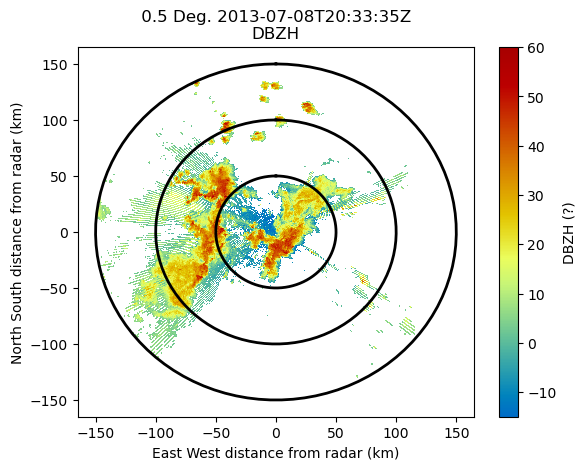
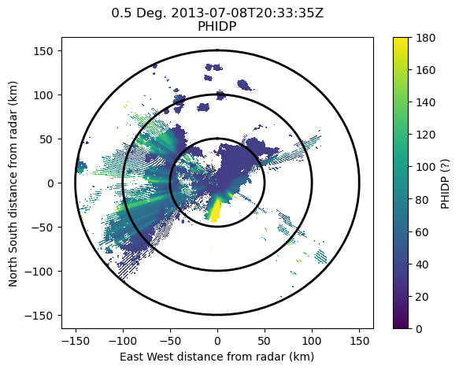
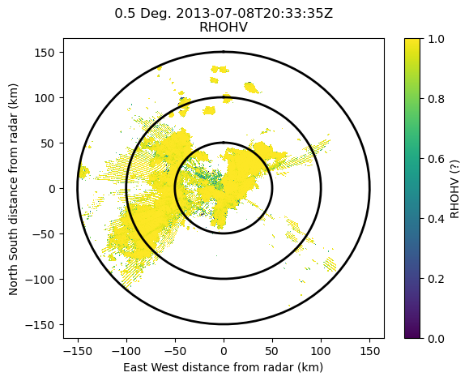
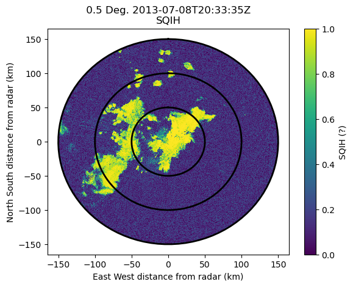
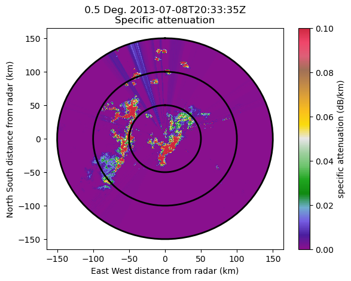
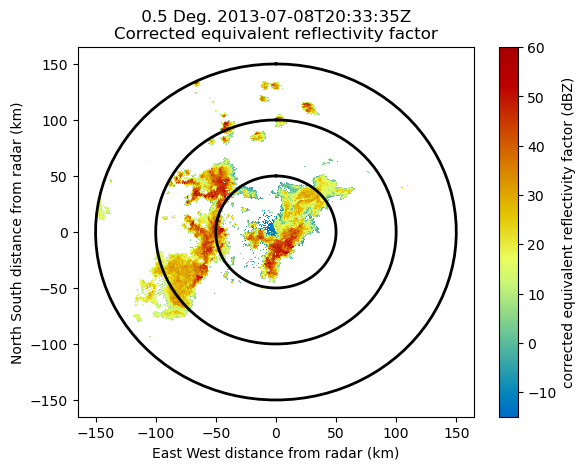
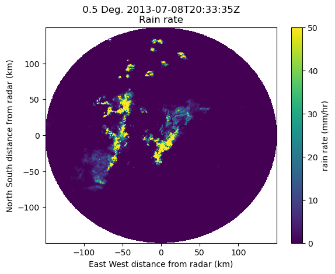

In this notebook, an ODIM_H5 file is read using BALTRAD. Then the rain rate is determined from the calculated specific attenuation using Py-ART.
This is a severe flooding case from July 8, 2013 in Toronto, Canada, with radar data from the King City, Ontario, radar.
%matplotlib inline
Import the necessary modules.
import numpy as np
import pyart
import baltrad_pyart_bridge as bridge # routines to pass data from Py-ART and BALTRAD
import _raveio # BALTRAD's input/output module
## You are using the Python ARM Radar Toolkit (Py-ART), an open source
## library for working with weather radar data. Py-ART is partly
## supported by the U.S. Department of Energy as part of the Atmospheric
## Radiation Measurement (ARM) Climate Research Facility, an Office of
## Science user facility.
##
## If you use this software to prepare a publication, please cite:
##
## JJ Helmus and SM Collis, JORS 2016, doi: 10.5334/jors.119
Read in the data using RAVE (a component of BALTRAD)
Rain rate retrieval using specific attenuation using BALTRAD and Py-ART
rio = _raveio.open('data/WKR_201307082030.h5')
Convert the data to a Py-ART Radar object.
radar = bridge.raveio2radar(rio)
Examine some of the radar moments.
display = pyart.graph.RadarDisplay(radar)
display.plot_ppi('DBZH', 0, vmin=-15, vmax=60)
display.plot_range_rings([50, 100, 150])

display.plot_ppi('PHIDP', 0, vmin=0, vmax=180)
display.plot_range_rings([50, 100, 150])

display.plot_ppi('RHOHV', 0, vmin=0, vmax=1.0, mask_outside=False)
display.plot_range_rings([50, 100, 150])

display.plot_ppi('SQIH', 0, vmin=0, vmax=1, mask_outside=False)
display.plot_range_rings([50, 100, 150])

Calculate the specific attenuation and attenuation corrected reflectivity using Py-ART, add these field to the radar object.
spec_at, cor_z = pyart.correct.calculate_attenuation(
radar, 0, doc=0, refl_field='DBZH', ncp_field='SQIH',
rhv_field='RHOHV', phidp_field='PHIDP',
fzl=8000,)
# use the parameter below for a more 'cleanup up' attenuation field
#ncp_min=-1, rhv_min=-1)
/srv/conda/envs/notebook/lib/python3.9/site-packages/numpy/core/fromnumeric.py:784: UserWarning: Warning: 'partition' will ignore the 'mask' of the MaskedArray.
a.partition(kth, axis=axis, kind=kind, order=order)
radar.add_field('specific_attenuation', spec_at)
radar.add_field('corrected_reflectivity', cor_z)
Examine these two new fields.
display.plot_ppi('specific_attenuation', 0, vmin=0, vmax=0.1)
display.plot_range_rings([50, 100, 150])

display.plot_ppi('corrected_reflectivity', 0, vmin=-15, vmax=60)
display.plot_range_rings([50, 100, 150])

Calculate the rain rate from the specific attenuation using a power law determined from the ARM Southern Great Plains site. Mask values where the attenuation is not valid (when the cross correlation ratio or signal quality is low). Add this field to the radar object.
R = 300.0 * (radar.fields['specific_attenuation']['data']) ** 0.89
rain_rate_dic = pyart.config.get_metadata('rain_rate')
rain_rate_dic['units'] = 'mm/hr'
rate_not_valid = np.logical_or(
(radar.fields['SQIH']['data'] < 0.4),
(radar.fields['RHOHV']['data'] < 0.8))
rain_rate_dic['data'] = np.ma.masked_where(rate_not_valid, R)
# fill the missing values with 0 for a nicer plot
rain_rate_dic['data'] = np.ma.filled(rain_rate_dic['data'], 0)
radar.add_field('RATE', rain_rate_dic)
Examine the rain rate
display.plot_ppi('RATE', 0, vmin=0, vmax=50.0)

Create a new RaveIO object from the Py-ART radar object and write this out using Rave
rio_out = bridge.radar2raveio(radar)
container = _raveio.new()
container.object = rio_out.object
container.save("data/WKR_201307082030_with_rain_rate.h5")
import os
print("ODIM_H5 file is %i bytes large" % os.path.getsize("data/WKR_201307082030_with_rain_rate.h5"))
ODIM_H5 file is 6259783 bytes large
Publish a time series of Cartesian products of corrected reflectivity to BALTRAD’s GoogleMapsPlugin
Using your Browser, preferably anything except Microsoft Internet Explorer, view a pre-loaded product: http://localhost:8080 Use the small Calendar icon in the control panel to select 2013-07-08 20:30. The dropdown box under the date/time field should read “King City, ON”.
Fire up the RAVE Product Generation Framework’s server. This is normally done on the command line.
import os
os.system("rave_pgf start")
0
Connect to this XML-RPC server and feed it file strings of pre-generated products
import glob, xmlrpc.client
ipath = "/home/vagrant/pyart2baltrad/data/cawkr"
opath = "/home/vagrant/miniconda/envs/openradar/rave_gmap/web/data/cawkr_gmaps"
server = xmlrpc.client.ServerProxy("http://localhost:8085/RAVE")
fstrs = glob.glob(ipath + "/*.h5")
for ifstr in fstrs:
# Output file name must only be date/time string with format: YYYYMMDDHHmm.png
dt = os.path.split(ifstr)[1].split('_')[2].split('.')[0]
ofstr = opath + "/%s/%s/%s/%s.png" % (dt[:4], dt[4:6], dt[6:8], dt)
response = server.generate("se.smhi.rave.creategmapimage", [ifstr], ["outfile",ofstr])
print("Generated %i PNG images for Google Maps" % len(fstrs))
Generated 0 PNG images for Google Maps